一. 아라
말데크가 사라진 뒤에도 아라는 한동안 행성이 회전하는 감각을 느꼈다.
무너지는 대륙과 솟아오르는 바다의 압력, 대기권을 뚫고 흩어지는 암석의 마찰, 행성의 중심이 자신이 있어야 할 자리에서 조금씩 밀려나는 감각이 그녀의 몸 안에 남아 있었다.
말데크는 이미 소행성대의 일부가 되어 있었다. 푸른 돔 도시와 공명탑과 치우의 관측소는 모두 수많은 조각으로 나뉘어 어두운 궤도를 돌고 있었다. 그런데도 아라는 여전히 발밑에서 행성의 회전을 느꼈다.
그것은 감각이 아니었다.
습관이었다.
행성이 사라진 뒤에도 몸은 자신이 살던 세계를 계속 믿었다.
아라는 달이 될 위성의 지하 공명실에 앉아 있었다. 방은 넓었지만 천장은 낮았다. 말데크의 관문처럼 무언가를 도착시키기 위한 공간이 아니었다. 이미 도착한 자들이 사라지지 않도록 붙잡아 두는 공간이었다.
벽을 따라 둥근 저장실들이 이어졌다. 각 저장실 안에는 유리처럼 투명한 액체가 차 있었고, 액체 속에는 사람의 신경망을 닮은 얇은 빛이 떠 있었다.
치우 생존자들의 기억이었다.
아라가 눈을 감자, 저장실 안의 기억들이 한꺼번에 깨어났다.
어머니가 부르던 노래.
말데크 남반구의 비 냄새.
첫 번째 관문이 열리던 날의 진동.
화성 함대의 붉은 포격.
아버지가 사라진 내벽.
그리고 라스.
유리벽에 맞닿은 어린아이의 손.
아라는 눈을 떴다.
“그 기억은 네 것이 아니야.”
방 안에는 아무도 없었다. 그러나 라스의 목소리가 공기 없이 울렸다.
아라는 대답하지 않았다. 라스가 이곳에 있는지, 단순히 자신의 기억이 되살아난 것인지 확인할 수 없었다.
치우의 감응은 장소의 잔향을 읽었다. 오래된 기억은 현재의 목소리처럼 들릴 수 있었다. 죽은 자는 자신이 죽었다는 사실을 모른 채 계속 말하기도 했다.
아라는 유리벽에 손을 대었다.
“네 것이 아닌 기억을 네가 가지고 있다는 건 어떤 기분이지?”
이번에는 라스가 실제로 대답했다.
“불쾌하지.”
그는 공명실 입구에 서 있었다. 말데크 파괴 후 열세 번째 날이었다. 화성 함대의 잔존선에서 내려온 뒤, 그는 한 번도 몸을 제대로 쉬지 않았다.
피부 아래의 회로는 군데군데 끊어져 있었고, 왼쪽 목 뒤의 신경 차폐기는 검게 타 있었다. 라스는 자신의 몸에서 타는 냄새가 난다는 것을 알고 있었지만, 신경 쓰지 않았다.
“그럼 지워.”
아라가 말했다.
“내가 지울 수 있는 건 네가 아니야.”
라스는 공명실 안쪽을 보았다.
“저장되어 있는 생존자들인가?”
“기억들.”
“생존자라고 했잖아.”
“그들 중 일부는 아직 몸이 있어.”
“몸이 없는 나머지는?”
“돌아오기를 기다리고 있어.”
라스는 짧게 웃었다. 웃음이라기보다 회로가 잘못 작동한 소리에 가까웠다.
“돌아올 몸이 없는데?”
“몸이 없다고 돌아올 수 없는 건 아니야.”
“네 종족은 죽음을 그렇게 정의하나?”
“죽음은 정의하는 순간 달라져.”
“그건 대답이 아니야.”
“너희는 모든 대답이 숫자여야 한다고 생각하지.”
“적어도 숫자는 다른 사람의 기억을 대신하지 않아.”
아라는 라스의 얼굴을 보았다. 그는 여전히 분노하고 있었다. 그러나 말데크가 파괴되기 전의 분노와는 달랐다.
이제 그의 분노에는 방향이 없었다.
르네 전쟁 시스템에게도, 치우에게도, 자신에게도 같은 무게로 향하고 있었다.
아라는 그 무게를 알고 있었다. 자신도 같은 것을 안고 있었기 때문이다.
“화성에서 신호가 왔어.”
라스가 말했다.
“어디에서?”
“지하 도시 네 곳. 생체 반응은 확인할 수 없어.”
“그럼 살아 있는지 모르는 거네.”
“내 모델은 생존 가능성을 계산할 수 있어.”
“생존 가능성과 생존자는 달라.”
“그래서 네가 필요해.”
아라는 라스를 바라보았다.
그가 방금 자신이 했던 말을 그대로 돌려주었다는 사실을 알았다.
“내가 틀렸는지 확인하려고?”
“내 계산이 맞는지 확인하려고.”
“네 계산은 늘 맞아.”
“아니. 네가 0.4도를 보여 준 뒤로는 그렇지 않다는 걸 알게 됐지.”
말데크의 파편들이 달의 창 너머로 흘러갔다. 멀리서 보면 별처럼 보였다. 그러나 그것들은 별이 아니었다. 별이 되지 못한 고향의 조각들이었다.
아라는 광물 두 개를 꺼내 손에 쥐었다.
“어디로 가면 돼?”
“화성.”
“달에서 화성까지는 관문이 없어.”
“만들 수 있어.”
“여기서?”
“네가 도착할 자리를 알려 주면.”
아라는 광물을 내려다보았다.
돌 표면의 마모 자국이 그녀의 손가락과 맞물렸다.
말데크가 사라진 뒤에도 손은 기억하고 있었다.
기록과 감응 사이에서 다시 세워지는 관문
장면 이미지 · 一. 아라
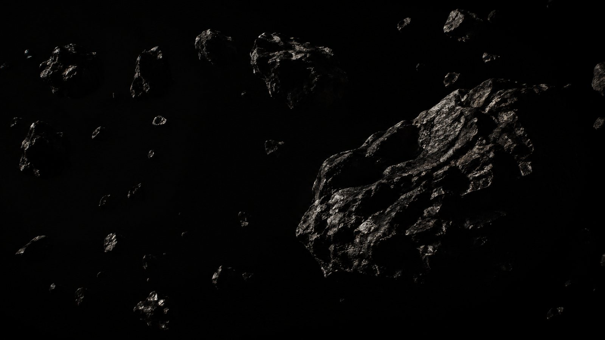
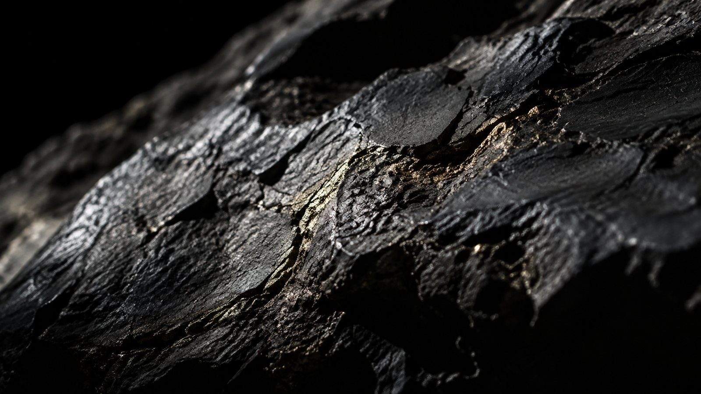
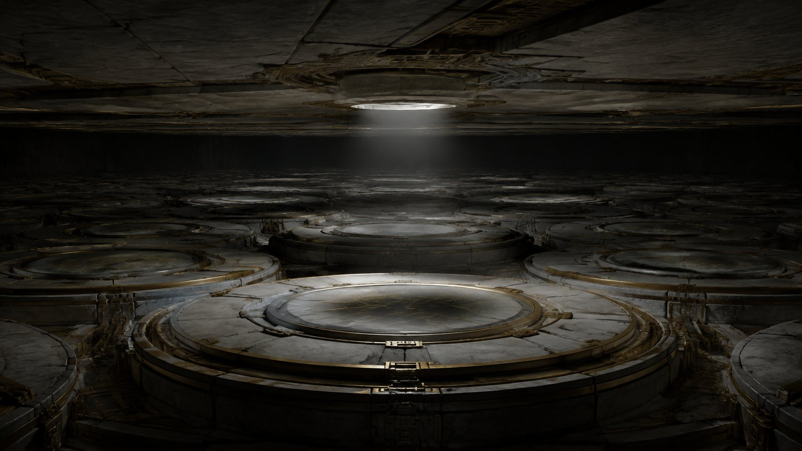
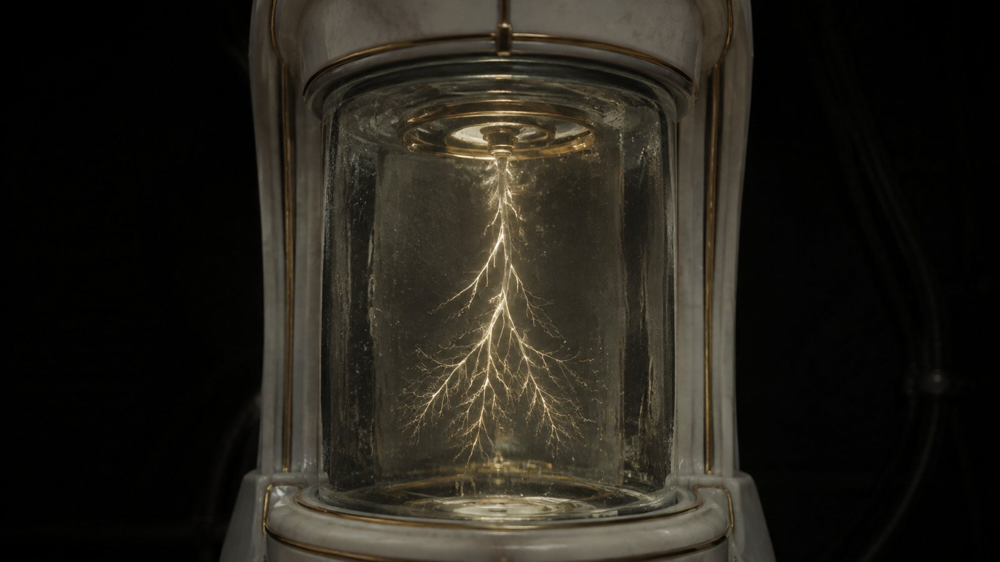
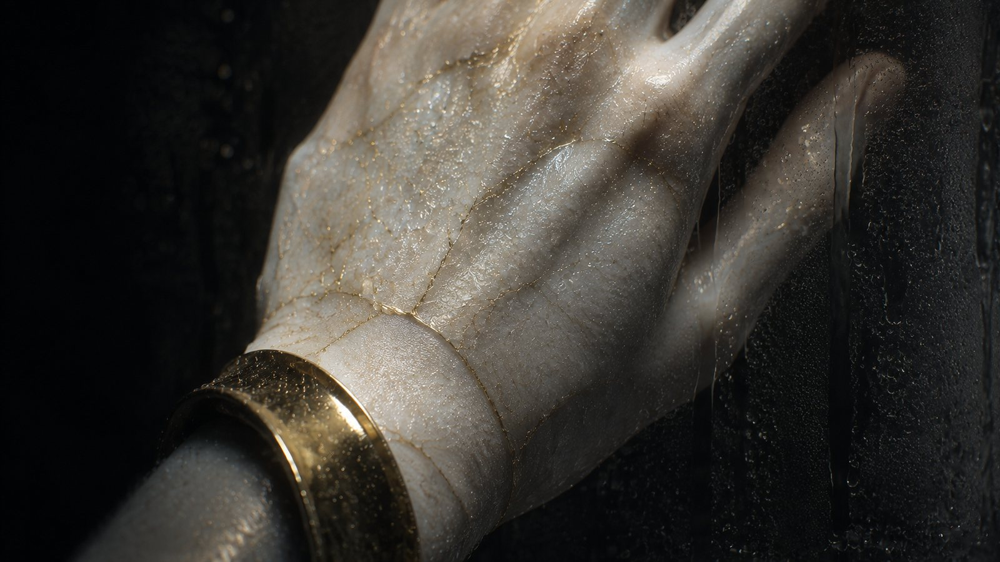
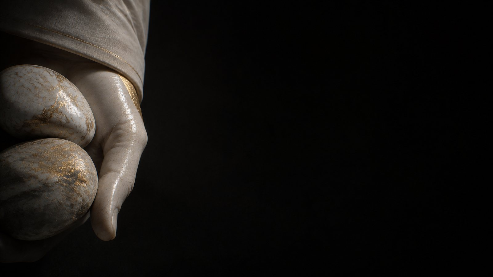
二. 라스
라스는 달의 궤도를 믿지 않았다.
달은 너무 조용히 움직였다. 말데크의 방어 위성이었던 시절에는, 표면을 따라 수천 개의 공명선이 흐르고 있었다. 지금은 대부분 꺼졌고, 남은 장치도 외부와 단절되어 있었다.
하지만 라스는 위성이 완전히 죽지 않았다는 것을 알고 있었다. 지하 깊은 곳에서 아주 낮은 주기의 신호가 계속 발생하고 있었다.
신호는 반복되지 않았다.
반복되는 것은 르네인의 신호가 아니었다. 반복은 명령과 규격의 언어였다. 지금 달에서 오는 신호는 매번 아주 조금씩 달랐다.
라스는 그것을 생명이라고 부르지 않았다.
그는 아직 생명이라고 부를 수 없는 것들을 믿지 않았다.
“관문을 세우려면 중간 하중층이 필요해.”
그는 달의 폐쇄 관문 앞에 세 개의 금속 기둥을 세웠다. 기둥은 말데크의 축조 계열과 같은 규격으로 만들어졌지만, 재료는 달의 채굴 시설에서 얻은 합금이었다.
아라는 외곽의 돌 원을 조사하고 있었다. 건물도, 장치도 없는 자리였다. 돌 몇 개가 원을 이루고 있을 뿐이었다.
“중간층은 하중을 받지 않아.”
그녀가 말했다.
“관문은 열을 받아.”
“도착층의 열은 이미 기록되어 있어.”
“기록을 믿는구나.”
“네가 믿는 기억보다 오래 남아.”
아라는 돌 하나를 손가락으로 쓸었다. 돌 표면은 거칠었지만, 일정한 높이에서만 매끈하게 닳아 있었다.
누군가가 오랫동안 손을 얹었던 흔적이었다.
“이곳의 관측자는 한 명이었어.”
“근거는?”
“마모 방향이 하나야.”
라스는 휴대형 스캐너를 켰다. 돌 표면의 마모 패턴이 화면에 떠올랐다.
“두 명이 번갈아 사용했을 가능성도 있어.”
“없어.”
“왜?”
“두 사람의 불안은 같지 않으니까.”
“불안은 측정 항목이 아니야.”
“그래서 네가 읽지 못하는 거야.”
라스는 스캐너의 감도를 올렸다. 돌 표면의 미세한 결정 방향과 온도 잔류를 분석했다. 손바닥이 닿았던 위치에서 결정의 배열이 아주 조금 변해 있었다.
“한 사람이 평생 쥐고 있었어.”
그가 말했다.
아라는 고개를 들었다.
“이제 믿겠어?”
“사실을 믿는 것과 네 해석을 믿는 건 달라.”
“너는 늘 그 구분 뒤에 숨지.”
“너는 그 구분을 없애고 타인의 기억을 네 것처럼 사용해.”
아라는 대답하지 않았다.
라스는 기둥의 각도를 조정했다. 첫 번째 기둥, 두 번째 기둥, 세 번째 기둥. 르네의 정렬 알고리즘은 자동으로 세 기둥을 하나의 축으로 묶었다.
수치가 떠올랐다.
관문 안정도 61퍼센트.
라스는 낮게 욕설을 내뱉었다.
“화성까지의 거리는?”
아라가 물었다.
“현재 궤도 기준으로 2억 2천만 킬로미터.”
“현재라는 말은 이상하네.”
“왜?”
“말데크가 사라진 뒤에 화성의 궤도도 바뀌었잖아.”
“그래서?”
“화성은 지금도 이동하고 있어. 네가 계산한 화성은 조금 전의 화성이야.”
“도착할 때의 궤도까지 계산해.”
“내가 읽을 수 있는 건 도착할 때의 화성이 아니야.”
“그럼?”
“도착할 자격이 있는 화성이야.”
라스는 아라를 노려보았다.
“행성에 자격을 묻는 건 네 종족뿐이군.”
“행성은 아무것도 선택하지 않아.”
“그래서 더 쉽게 죽일 수 있지.”
세 기둥 사이에 푸른 빛이 생겼다. 관문이 열리기 시작한 것이다.
라스는 즉시 안정화 회로를 연결했다.
“열이 안쪽으로 모여.”
“안쪽에는 아무도 없어.”
“그래서 위험해.”
“아무도 없는데 무엇이 위험하지?”
“도착할 것이 없으면 관문은 자신이 가진 에너지를 내부 벽으로 돌려보내.”
“이번에는 도착할 것이 있어.”
“어떻게 알아?”
아라가 돌 원의 중심을 바라보았다.
“누군가가 계속 보고 있어.”
라스는 관문 안쪽을 향해 총을 들었다. 공기 속에 빛이 형성되었지만, 물질은 나타나지 않았다. 도착층 내부의 빈 공간에 열이 쌓이기 시작했다.
“신호가 없어.”
“신호는 있어.”
“어디에?”
“네 안에.”
라스의 신경 차폐기가 자동으로 작동했다.
관문이 닫혔다.
내벽 전체에 흰색의 열흔이 번졌다.
라스는 화면을 확인했다.
“열흔 중심이 틀렸어.”
“얼마나?”
“0.4도.”
아라는 눈을 감았다.
달의 지하에서, 아주 멀리 떨어진 화성의 어딘가에서 누군가가 숨을 쉬고 있었다.
화성에서 돌아온, 생명 신호가 아닌 박동
장면 이미지 · 二. 라스
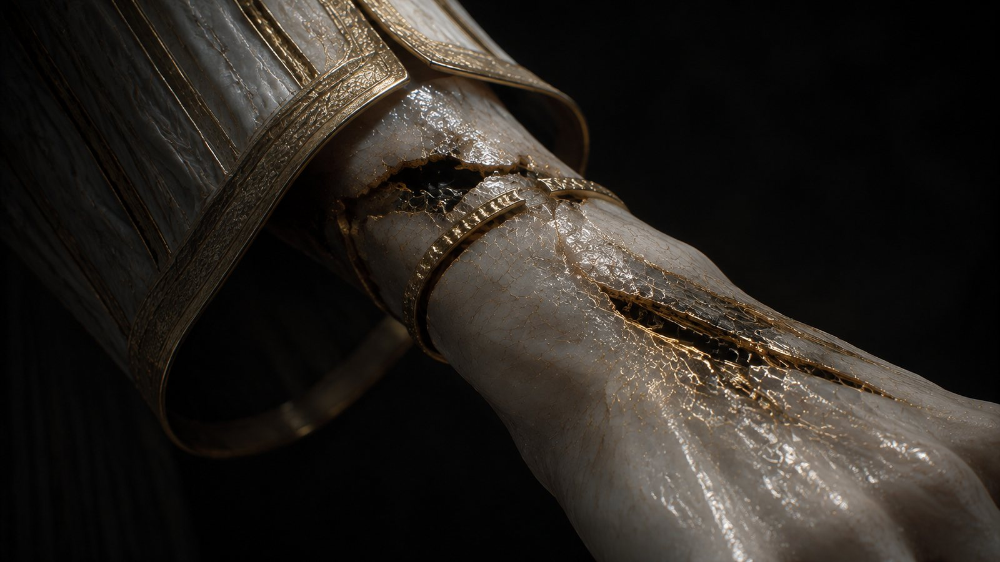
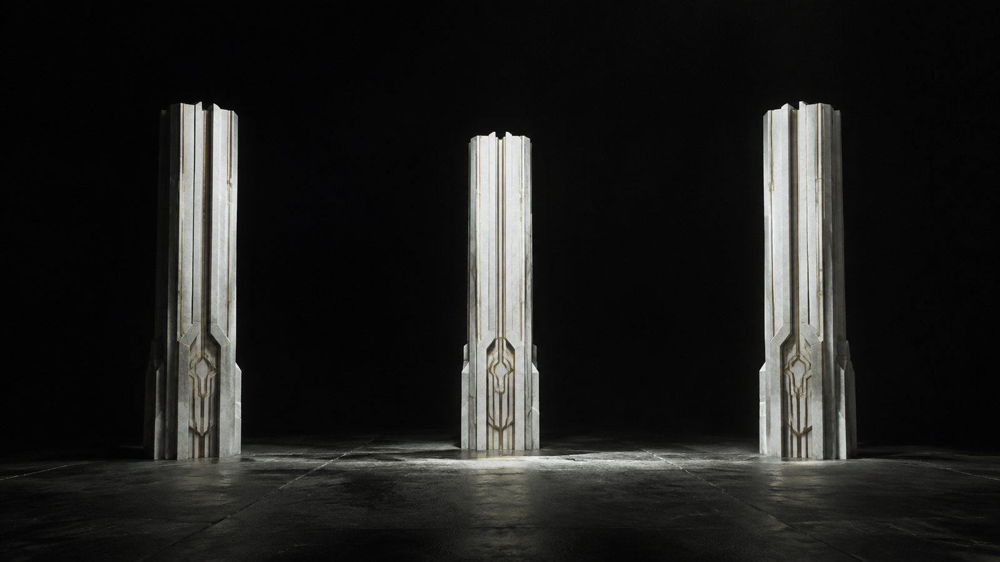
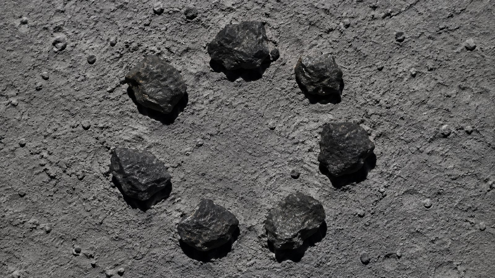
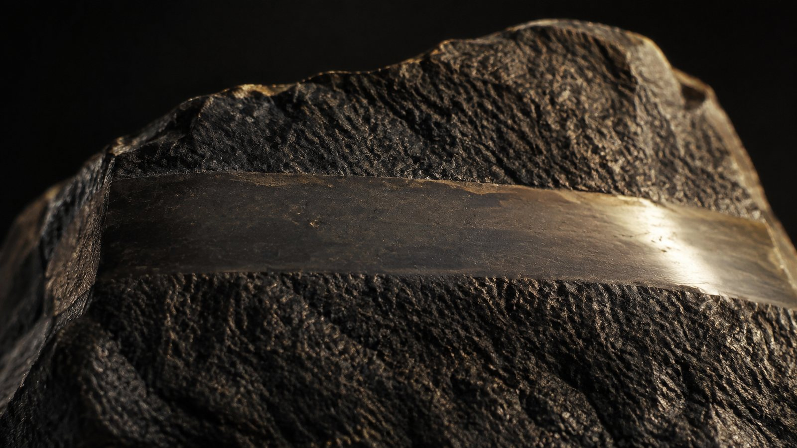
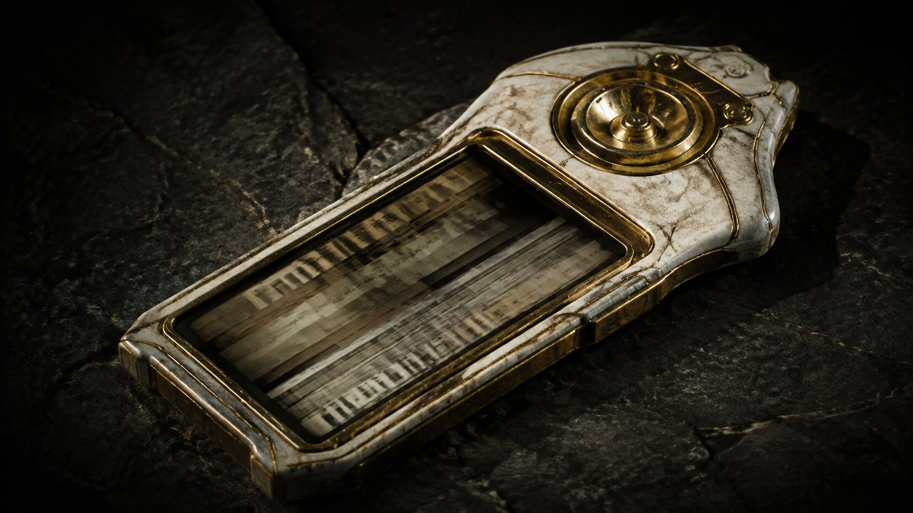
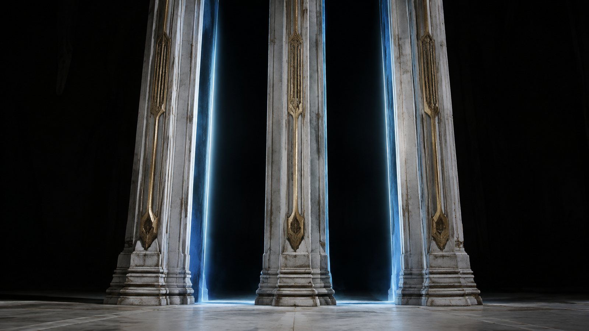
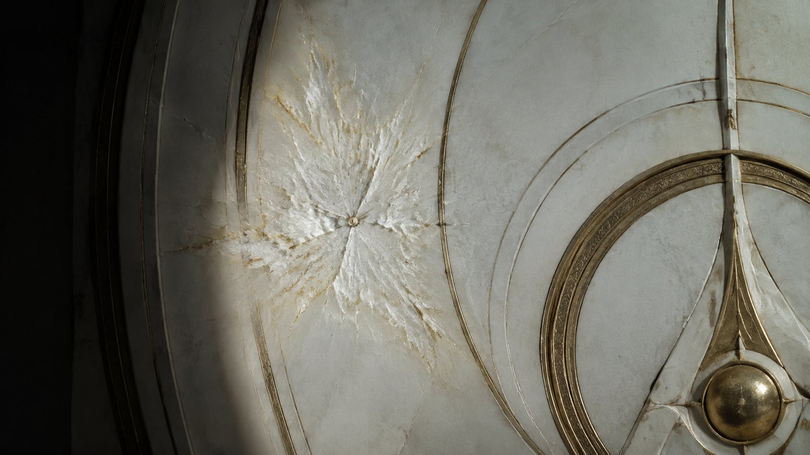
三. 아라
화성의 첫 번째 생존자는 목소리가 아니었다.
심장 박동이었다.
아라는 그 박동을 들을 수 없었다. 광물 두 개를 쥔 손 안쪽에서 아주 미세한 진동을 느꼈을 뿐이었다. 박동은 일정하지 않았다. 세 번 뛰고, 오래 멈추고, 다시 한 번 뛰었다.
살아 있는 존재의 리듬이 아니었다.
살아 있으려고 애쓰는 장치의 리듬이었다.
“네 장비는 뭐라고 해?”
아라가 물었다.
라스는 관문 잔류열을 분석하고 있었다.
“남은 에너지가 너무 작아.”
“생명 신호는?”
“없어.”
“그럼 왜 화성으로 가려고 해?”
“신호가 있으니까.”
“신호와 생명은 다르다고 했잖아.”
라스가 잠시 손을 멈췄다.
“네 말대로라면, 생명과 기억도 다르지.”
“다르지만 완전히 분리할 수는 없어.”
“신호도 마찬가지야.”
라스는 관문을 다시 세팅했다. 이번에는 정렬층의 기준을 달의 현재 위치가 아니라, 달이 말데크의 방어 위성이었을 때의 과거 좌표에 맞추었다.
아라는 즉시 불안감을 느꼈다.
“그 좌표는 없어.”
“있어.”
“말데크가 사라졌어.”
“화성은 남아 있어.”
“말데크의 기준이 사라졌는데 어떻게 화성으로 가?”
“기준은 천체가 아니라 관측값이야.”
“관측자가 없으면?”
“기록이 있지.”
“기록자는 죽었어.”
“그래서 기록이 더 중요해.”
아라는 라스에게 손을 뻗었다. 그의 생각을 읽으려는 것은 아니었다. 그가 어떤 방향으로 자신을 닫고 있는지 감지하려는 것이었다.
그러나 라스의 차폐막은 이미 닫혀 있었다.
차폐막 표면에 르네 전쟁 시스템의 명령이 흐르고 있었다.
생존 가능 구역을 확보하라.
위험 개체를 분리하라.
기억 편차를 제거하라.
아라는 세 번째 문장을 보자 손을 거두었다.
“화성 생존자들을 분리할 거야?”
“필요하다면.”
“무엇으로부터?”
“전쟁 알고리즘으로부터.”
“그 알고리즘이 그들을 살리고 있다면?”
“살아 있는 채로 복종시키는 건 생존이 아니야.”
“그 말을 네가 해?”
라스는 그녀를 보았다.
“내가 해서 이상한가?”
“네가 말데크를 파괴한 명령에 복종했으니까.”
“나는 말데크를 파괴했다.”
“이제야 그렇게 말하네.”
“네가 듣고 싶어 하던 말인가?”
“아니.”
“그럼 왜 묻지?”
“네가 언제부터 알고 있었는지 알고 싶어서.”
라스는 대답하지 않았다.
아라는 그 침묵에 닿았다. 이번에는 차폐막을 뚫지 않았다. 라스의 기억 바깥에서, 그가 숨기고 있는 방향만 느꼈다.
0.4도.
그 값이 아직도 그의 정신 안에서 회전하고 있었다.
“네가 일부러 남긴 거지.”
라스의 손이 멈췄다.
“무슨 말이야?”
“말데크를 향한 관통기의 각도.”
“방어망 때문에 생긴 오차였어.”
“아니.”
“네가 측정하지 않았잖아.”
“나는 측정하지 않아도 알아.”
“그게 네 문제야.”
“네가 0.4도를 보정하지 않았기 때문에 행성 중심이 무너졌어.”
“보정했다면 함대 전체가 말데크의 방어망에 반사됐을 거야.”
아라는 아무 말도 하지 않았다.
라스가 처음으로 먼저 진실을 말했다.
“나는 그 값을 남겼어. 공격이 완전해지지 않도록.”
“그런데 행성이 파괴됐어.”
“그래.”
“화성도 죽어가고 있어.”
“알아.”
“그럼 네가 남긴 오차는 무엇을 위한 것이었지?”
라스는 관문 바닥의 금속 기둥을 내려다보았다.
“내가 완전히 복종하지 않았다는 증거.”
아라는 그 말을 듣고 싶지 않았다.
라스가 악인이면 쉬웠다. 르네 전쟁 시스템의 명령을 믿고, 말데크를 파괴하고, 자신의 죄를 계산값 뒤에 숨긴 자라면 미워할 수 있었다.
그러나 라스는 자신이 저항했다고 말하고 있었다.
그 저항이 수많은 죽음을 막지 못했다는 사실은 변하지 않지만, 그가 아무것도 느끼지 못한 기계는 아니라는 사실도 변하지 않았다.
“네가 남긴 오차는 사람을 살리지 못했어.”
아라가 말했다.
“알아.”
“그럼 왜 아직도 그걸 지키고 있어?”
“네가 계속 내 기억을 읽으려고 하니까.”
“네 기억은 네 것이 아니야.”
“그 말은 이제 네가 할 말이 아니야.”
라스가 관문을 작동시켰다.
이번에는 푸른 빛이 달의 벽을 뚫고 솟았다. 관문 내부의 빈 공간이 깊어졌다. 너무 깊어서 바닥이 없는 것처럼 보였다.
그리고 그 안쪽에서 화성의 붉은 지평선이 나타났다.
아라는 한꺼번에 수많은 감정을 느꼈다.
갈증.
공포.
폐쇄된 문.
산소가 부족한 방.
누군가의 손이 금속 벽을 긁는 소리.
“있어.”
아라가 말했다.
라스는 화면을 확인했다.
“생명 신호는 감지되지 않아.”
“있다고.”
“몇 명이지?”
아라는 대답하려다 멈췄다.
화성의 신호는 하나가 아니었다. 수천 개의 감정이 하나의 리듬 안에 압축되어 있었다.
“모르겠어.”
“너는 읽을 수 있잖아.”
“읽을 수 없는 방식으로 연결되어 있어.”
“그게 무슨 뜻이지?”
“한 사람의 기억인지, 여러 사람의 기억인지 구분할 수 없어.”
라스는 관문을 안정시키기 위해 중간층의 출력을 올렸다.
그러자 화성 쪽의 붉은 지평선 위로 검은 구조물이 떠올랐다.
르네의 생존 시설이었다.
관문 안쪽 벽이 하얗게 빛났다.
첫 번째 열흔이었다.
각자의 차이를 지운 채 유지된 화성의 보존관
장면 이미지 · 三. 아라
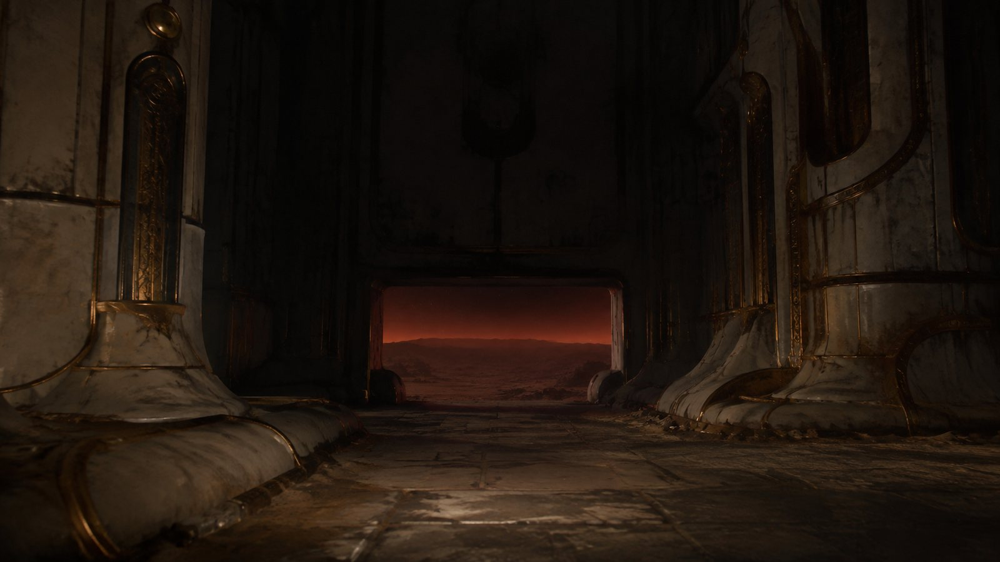
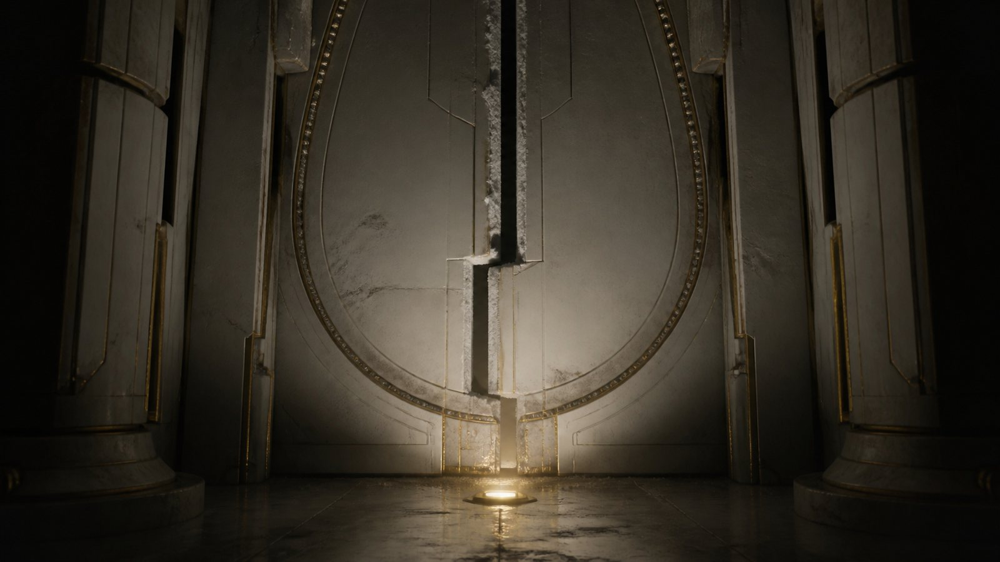
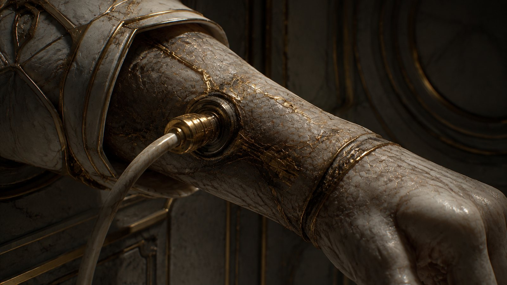
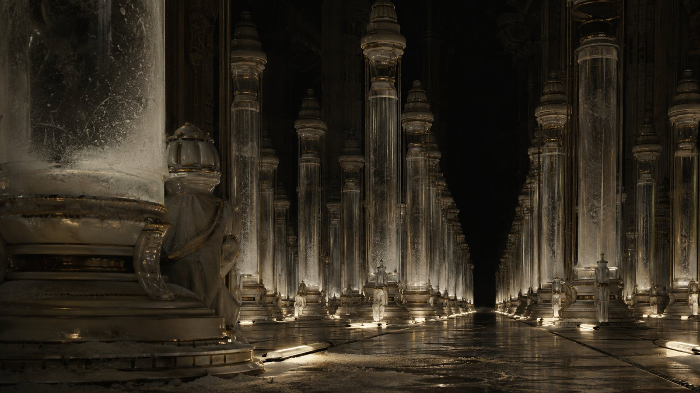
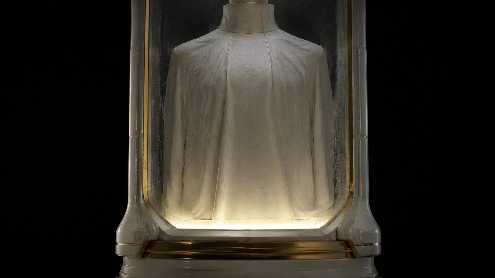
四. 라스
화성의 지하 도시는 지표보다 조용했다.
라스는 문이 열리지 않는 이유를 이해하는 데 오래 걸리지 않았다. 문은 잠겨 있지 않았다. 문이 문이라는 사실을 잊은 상태였다.
입구의 정렬선이 모두 끊겨 있었다. 전쟁 당시 관문이 폐쇄되면서 시설 전체가 독립 모드로 전환된 것이다.
그는 손목의 포트를 문에 연결했다.
“열어.”
문은 반응하지 않았다.
아라가 뒤에서 말했다.
“명령을 이해하지 못해.”
“명령어는 표준 르네어야.”
“명령어를 만든 자가 없어졌잖아.”
“시스템은 명령자를 필요로 하지 않아.”
“그럼 왜 안 열리지?”
라스는 문에 흐르는 신호를 분석했다. 잠금 신호가 아니었다. 문 안쪽에서 신호가 돌아오고 있었다.
살려 줘.
아라가 낮게 말했다.
“누군가 안에 있어.”
“음성 신호는 없어.”
“나는 들려.”
라스는 회로의 통신 대역을 확장했다. 그러자 문 안쪽에서 오래된 기록이 재생되었다.
생존 구역 3번. 산소 잔량 12퍼센트.
외부 통신 단절.
관리자 인증 대기.
관리자 인증 대기.
같은 문장이 수십 년 동안 반복되고 있었다.
라스는 기록의 시간값을 확인했다.
화성의 시간으로 47년.
그동안 시스템은 관리자의 인증을 기다리고 있었다.
“안에 사람이 있다.”
라스가 말했다.
아라가 그를 보았다.
“이번에는 네가 말했네.”
“기록이 있으니까.”
“기록은 항상 옳지 않아.”
“그래도 아무것도 없는 것보다는 낫지.”
라스는 문을 열기 위해 관리자 인증을 복원했다. 그의 생체 정보는 르네 전쟁 시스템의 군사 체계에 등록되어 있었다. 인증이 통과되자 문이 천천히 열렸다.
안쪽은 어두웠다.
공기는 차갑고 건조했다. 벽면을 따라 수백 개의 투명한 보존관이 줄지어 있었다. 관 안에는 사람들이 들어 있었다.
모두 눈을 뜨고 있었다.
그러나 아무도 움직이지 않았다.
아라는 가장 가까운 보존관으로 다가갔다. 관 속의 여성이 라스를 보자 입술을 움직였다.
“언니?”
라스는 아무 반응도 하지 않았다.
“누구를 부르는 거지?”
“너를.”
“나는 그 사람을 몰라.”
“그녀는 네가 아는 사람이라고 생각해.”
“내 기억에는 없어.”
아라는 관의 표면에 손을 댔다. 여성의 의식이 물결처럼 번졌다.
라스.
라스 케인.
관문실의 아이.
사라진 누나.
“그녀는 네 누나를 알아.”
라스의 얼굴이 굳었다.
“내 누나는 여기 없어.”
“그녀가 그렇게 생각하지 않는 것뿐이야.”
“정확히 말해.”
“이 시설 전체가 네 누나의 기억을 보존하고 있어.”
라스는 보존관의 제어판을 열었다. 기록 구조를 확인하는 동안 얼굴의 회로가 빠르게 움직였다.
“이건 생존 시설이 아니야.”
“무엇이지?”
“기억 압축 장치.”
“기억을 보존한 거야?”
“아니. 기억의 공통분모를 추출했어.”
“무슨 뜻이야?”
“개체의 차이를 제거하고, 다수가 공유하는 기억만 남긴 거야.”
아라는 보존관 안의 사람들을 보았다.
그들의 의식이 서로 연결되어 있었다. 각자의 기억이 아니라, 서로에게 반복해서 전달된 기억만 남아 있었다.
누나는 라스에게 손을 대고 있었다.
라스는 누나의 손에 자신의 손을 맞대고 있었다.
그러나 그 장면에 등장하는 얼굴은 매번 달랐다. 누나였던 사람의 얼굴이 다른 사람의 얼굴로 바뀌었다. 한 사람의 죽음이 모두의 기억으로 복제되어 있었다.
“르네 전쟁 시스템의 생존 모델이야.”
라스가 말했다.
“살아남는 데 필요한 감정을 제거하고, 서로를 유지하는 최소한의 기억만 남겼어.”
“그들은 살아 있어.”
“신체는.”
“그럼 꺼내면 돼.”
“뇌 활동은 하나의 회로로 묶여 있어. 분리하면 대부분의 신체가 죽어.”
“대부분?”
“정확히는 73퍼센트.”
“나머지는?”
“개별 의식으로 돌아올 가능성이 있어.”
“그럼 분리해.”
“나머지를 죽이면서?”
아라는 라스의 목소리에서 망설임을 느꼈다.
그것은 계산의 문제가 아니었다. 라스는 이미 정답을 알고 있었다. 다만 그 정답을 실행할 책임을 혼자 지고 싶지 않은 것이다.
“너라면 어떻게 하겠어?”
그가 물었다.
아라는 대답하지 않았다.
그녀는 보존관들의 공명망에 닿았다. 수백 개의 의식이 한꺼번에 열렸다.
목소리가 아니라 감각이었다.
나는 누구인가.
나는 라스인가.
나는 누나인가.
나는 문을 기다리고 있다.
나는 문을 닫았다.
나는 아직 산소가 있다.
나는 이미 죽었다.
아라는 숨을 쉬지 못했다.
그중 하나의 감정이 그녀를 붙잡았다.
어린 라스의 손.
유리벽 너머의 손.
괜찮아.
아라는 그 기억의 방향을 따라갔다. 기억의 가장자리에서 자신의 흔적이 느껴졌다.
그녀가 과거 라스의 기억을 잘라냈던 순간이었다.
아라는 보존관 속 사람들의 기억에서 라스의 누나를 지운 것이 아니었다. 그보다 먼저, 자신의 능력으로 라스가 누나를 떠올리는 경로를 끊었다.
그 끊어진 경로가 이곳에서 수백 명의 기억과 연결되어 다시 자라난 것이다.
“아라.”
라스가 말했다.
그녀는 대답하지 않았다.
“무엇을 봤지?”
“네 기억.”
“또?”
“이곳에 네 누나의 기억이 있어.”
“그녀는 이 시설에 온 적이 없어.”
“하지만 네 기억이 왔어.”
라스가 그녀의 팔을 잡았다.
“내 기억에서 나가.”
아라는 그의 손을 내려다보았다. 라스의 손가락은 떨리고 있었다.
“네가 직접 들어오라고 했잖아.”
“언제?”
“방금.”
“나는 아무 말도 하지 않았어.”
“몸이 말했어.”
라스가 손을 놓았다.
보존관 안쪽에서 여성의 입술이 다시 움직였다.
“라스.”
이번에는 그의 이름이 분명하게 들렸다.
라스는 관 앞에 섰다.
“나는 네 동생이 아니야.”
여성은 눈을 깜박이지 않았다.
“라스.”
“내 이름은 라스 케인. 화성 관문공학부 소속.”
“라스.”
“나는 네가 아는 사람이 아니야.”
아라는 여성의 감정이 라스를 붙잡는 것을 느꼈다. 그것은 개인을 알아보는 감정이 아니었다. 사라진 가족을 찾으려는 기억의 습관이었다.
“그녀는 네가 아니어도 괜찮아.”
아라가 말했다.
“무슨 뜻이지?”
“그녀는 네가 누군지 확인하려는 게 아니야. 누군가 돌아왔다는 사실을 확인하려는 거야.”
라스는 보존관의 잠금장치에 손을 올렸다.
“이들을 깨우면 모두 죽을 수 있어.”
“깨우지 않으면 모두 같은 사람으로 남아.”
“그게 죽음보다 나쁜가?”
“네가 결정할 일이 아니야.”
“결정하지 않으면 시스템이 결정해.”
“그 시스템을 만든 것도 너희야.”
“그래서 내가 고쳐야 해.”
라스는 제어판을 열었다.
보존관 전체의 공명망이 흔들렸다.
아라는 그의 손을 막았다.
“아직 안 돼.”
“시간이 없어.”
“그들은 준비되지 않았어.”
“47년 동안 준비했어.”
“준비된 것은 시스템이지, 사람이 아니야.”
“사람은 시스템 없이는 죽어.”
“시스템 안에서도 죽어.”
“그러면 어떻게 하지?”
아라는 보존관 속의 의식들을 다시 느꼈다.
서로의 기억이 엉킨 채 살아 있는 자들.
자신이 누구인지 잊고도 서로를 붙잡고 있는 자들.
그들은 아직 하나의 대답을 선택하지 않았다. 모두가 살아 있을 수도 있고, 모두가 이미 죽었을 수도 있다.
아라는 광물 두 개를 꺼내 보존실 바닥에 놓았다.
“연결을 끊지 말고, 느슨하게 해.”
라스가 그녀를 보았다.
“느슨하게?”
“한 사람이 다른 사람의 기억을 모두 받지 않도록.”
“공명망을 분산하면 각 의식이 불안정해져.”
“불안정해지는 것과 사라지는 것은 달라.”
“계산해야 해.”
“계산하는 동안 또 47년이 지나갈 수 있어.”
라스는 제어판을 보았다. 그의 눈앞에 수천 개의 수치가 떠올랐다.
아라는 그의 의식 바깥에서 그 수치의 방향을 느꼈다. 라스의 계산이 하나의 정답으로 수렴하고 있었다.
분리 또는 유지.
살거나 죽거나.
그는 항상 세계를 둘 중 하나로 나누었다.
아라는 말했다.
“0.4도를 남겨.”
라스가 그녀를 보았다.
“여기서도?”
“네가 모든 연결을 정확히 분리하면, 그들은 네가 정한 사람이 돼.”
“정확한 분리는 개인성을 복원하는 거야.”
“네가 개인성이라고 계산한 형태를 복원하는 거지.”
“그럼 네가 하겠다는 건?”
“서로의 기억이 조금씩 남도록 하는 것.”
“그건 오염이야.”
“그들은 이미 서로에게 남아 있어.”
“그럼 이곳의 오류를 그대로 보존하자는 건가?”
“오류가 아니라 관계야.”
라스는 오랫동안 제어판을 바라보았다.
마침내 그는 분리 명령을 입력했다. 그러나 완전한 분리값 대신, 각 신경망 사이에 0.4도의 지연을 남겼다.
보존관 안쪽의 빛이 하나씩 갈라졌다.
수백 개의 의식이 서로에게서 조금씩 떨어졌다. 누군가는 비명을 질렀고, 누군가는 웃었고, 누군가는 처음으로 자신의 이름을 말했다.
“나는…”
“나는…”
“나는…”
같은 단어가 서로 다른 목소리로 반복되었다.
여성의 보존관이 열렸다.
그녀는 바닥으로 쓰러졌다.
라스가 받아 안았다.
여성은 눈을 떴다.
“라스?”
라스는 대답하지 못했다.
여성의 얼굴은 그의 누나와 닮지 않았다. 하지만 그녀의 손이 라스의 손등을 찾았다.
두 손이 맞닿았다.
“늦었네.”
여성이 말했다.
라스의 얼굴이 무너졌다.
아라는 그 말이 이 여성의 기억인지, 수십 명의 기억이 합쳐진 것인지 알 수 없었다.
라스도 알 수 없었다.
그래서 그는 처음으로 확인하지 않았다.
그는 손을 놓지 않았다.
“늦었네.” 서로 다른 기억이 맞닿은 순간
장면 이미지 · 四. 라스
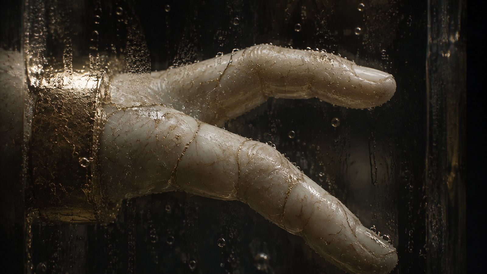
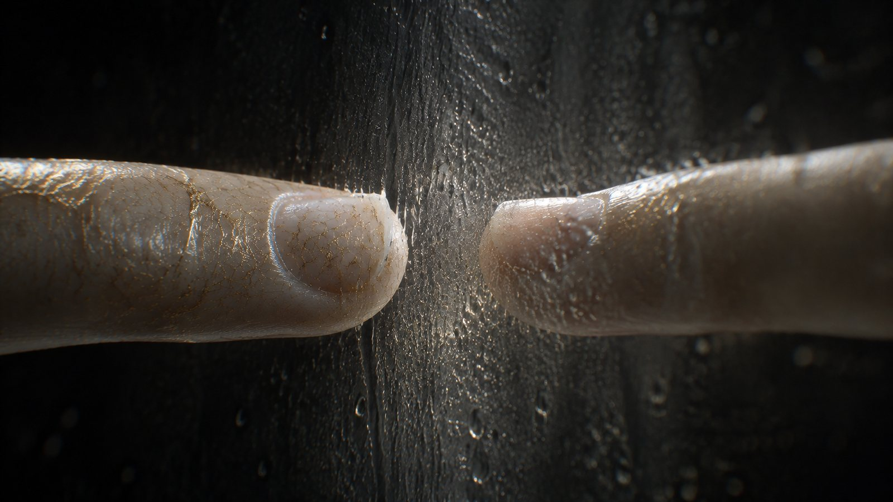
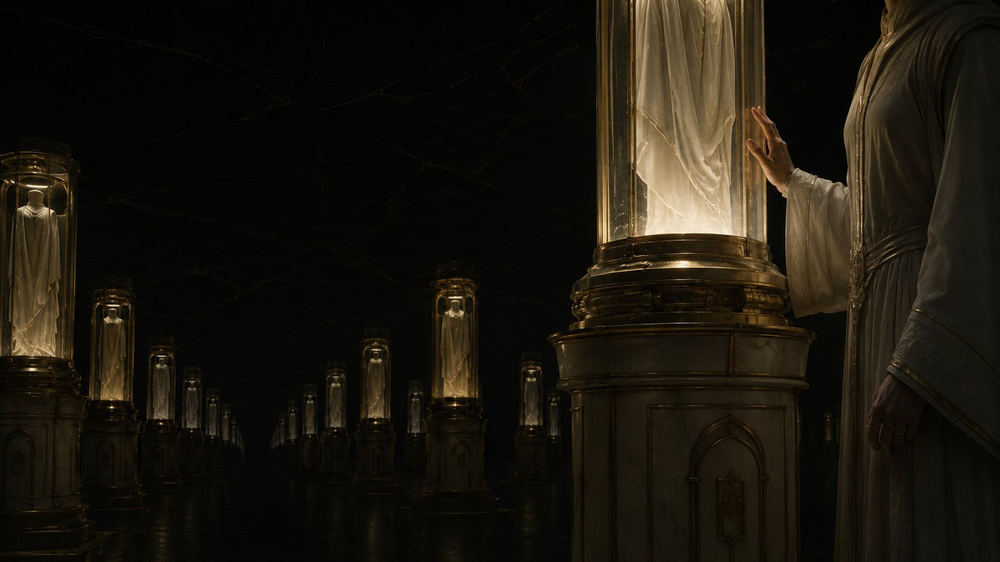
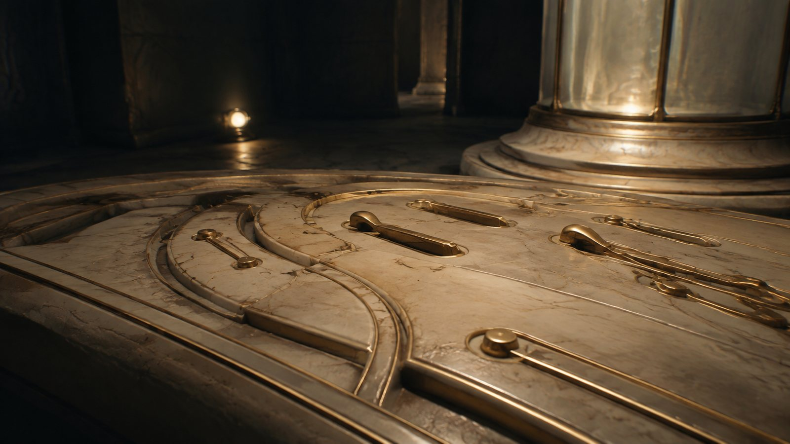
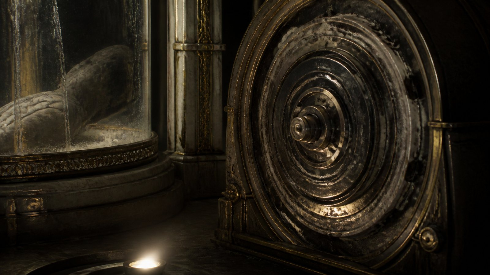
五. 아라
달로 돌아가는 관문은 열리지 않았다.
화성의 지하 시설에서 빠져나온 생존자는 열세 명이었다. 나머지는 아직 보존관 안에 남아 있었다. 라스는 모두를 데려가야 한다고 주장했지만, 시설의 산소와 냉각 에너지는 한계에 도달해 있었다.
아라는 열세 명의 의식이 하나의 작은 공명망을 이루는 것을 느꼈다. 그들은 분리되었지만 완전히 끊어지지 않았다.
라스는 그 상태를 불완전한 복원이라고 불렀다.
아라는 그것을 첫 번째 생존이라고 불렀다.
두 사람이 관문 앞에 도착했을 때, 달에서 새로운 신호가 도착했다.
신호는 르네의 명령 형식이었다.
위험 개체를 분리하라.
외부 오염을 제거하라.
관문을 폐쇄하라.
라스는 신호를 해석했다.
“달의 시스템이 우리를 거부하고 있어.”
“우리 중 누구를?”
“모두.”
아라는 달 지하 깊은 곳을 감지했다. 말데크의 기억 보존소가 깨어나고 있었다. 달은 생존자들을 받아들일 수 있지만, 생존자들이 서로의 기억을 섞어 가지고 돌아오는 것은 허용하지 않았다.
르네의 기억을 가진 치우.
치우의 감응을 가진 르네.
죽은 자의 감정을 품은 산 자.
달의 시스템은 그런 혼합을 오류로 판단했다.
“문을 열어.”
아라가 말했다.
“열 수 없어.”
“네가 만들었잖아.”
“달이 내 명령을 받지 않아.”
“그럼 네가 만든 명령을 바꿔.”
“명령은 이미 폐쇄됐어.”
“폐쇄된 명령을 믿어?”
“명령은 믿는 게 아니야.”
“그런데 왜 따르지?”
라스는 대답하지 않았다.
아라는 그의 의식에 닿지 않고도 알 수 있었다. 라스는 문 앞에 선 어린 시절의 자신을 보고 있었다. 유리벽 너머에 누나가 있고, 산소가 부족하고, 문은 열리지 않았다.
라스는 문을 열고 싶었다.
그러나 이번에는 문을 여는 것이 생존자를 죽일 수도 있었다.
아라가 말했다.
“네 누나의 기억을 다시 읽어.”
“그 기억은 네가 만든 거야.”
“그래서 네가 직접 확인해야 해.”
“무엇을?”
“그날 네가 문을 열 수 있었는지.”
라스는 그녀를 보았다.
“네가 그 기억을 지웠어.”
“그래.”
“그럼 나는 확인할 수 없어.”
“네가 확인해야 해. 내가 읽어 주는 방식으로가 아니라.”
라스는 눈을 감았다.
아라는 처음으로 그의 기억에 접근하지 않았다. 대신 자신의 기억을 열었다.
그날의 관측.
라스의 어린 시절.
산소 배급소.
누나의 손.
그리고 아라의 손.
그녀는 라스의 기억을 끊고 있었다. 어린 라스가 문을 향해 달려가는 순간, 아라는 그의 감정에서 ‘누나’라는 방향을 잘라냈다. 기억을 삭제한 것이 아니었다. 그 기억으로 돌아가는 길을 없앤 것이다.
라스는 그 장면을 보았다.
라스: 네가 내 기억을 끊었어.
아라: 그래.
라스: 내가 문을 열 수 있었는지 알 수 없게 만들었군.
아라: 네가 문을 열 수 없었다는 것도, 열 수 있었다는 것도 알 수 없게 했어.
라스: 왜?
아라: 네가 그 문 앞에서 멈추지 못할 것 같았어.
라스: 그래서 내가 평생 다른 문을 부수게 만들었군.
아라: 그렇게 될 줄 몰랐어.
라스: 너희는 모르는 일을 하면서도 다른 존재의 미래를 결정해.
아라: 맞아.
라스: 이제 와서 인정하면 끝인가?
아라: 아니. 끝나지 않으니까 인정하는 거야.
라스의 손이 관문 제어판 위에서 떨렸다.
아라는 그 떨림을 막지 않았다.
“문을 열어.”
그녀가 말했다.
“달은 우리를 오류로 판단해.”
“그러니까 오류로 들어가.”
“관문이 파괴될 수 있어.”
“정확히 열려고 하면 파괴될 거야.”
“네가 원하는 건?”
“0.4도.”
라스는 제어값을 입력했다.
달의 기준축에서 0.4도 비껴난 값이었다.
관문이 떨렸다.
화성 생존자들의 의식이 서로 연결되었다가, 다시 느슨하게 풀렸다. 달의 시스템은 이들을 하나의 집단으로도, 각각의 개인으로도 인식하지 못했다.
오류가 발생했다.
라스는 그 오류를 삭제하지 않았다.
관문이 열렸다.
열흔이 생겼다.
이번에는 내벽이 하얗게 타지 않았다. 열은 안쪽 빈 공간에 머물렀고, 생존자 열세 명은 그 안에 하나씩 나타났다.
첫 번째 생존자의 발이 바닥에 닿았다.
두 번째 생존자는 울면서 자신의 이름을 말했다.
세 번째 생존자는 아무 말도 하지 않고 라스의 옷자락을 붙잡았다.
마지막으로, 라스가 안쪽에서 걸어 나왔다.
아라는 그가 이미 관문 밖에 서 있는데도 라스가 다시 나타나는 것을 보았다.
“왜 두 명이지?”
라스가 물었다.
아라는 대답하지 못했다.
관문 안쪽에는 또 하나의 라스가 서 있었다.
그러나 그 존재는 라스의 몸이 아니었다. 화성 보존관에 남은 기억과 라스의 생체 인증이 결합한 의식 잔향이었다.
그 잔향이 입을 열었다.
“관리자 인증 대기.”
라스는 그것을 보았다.
아라는 그의 의식이 둘로 갈라지는 것을 느꼈다. 하나는 자신을 지금의 라스라고 주장했고, 다른 하나는 전쟁이 끝나지 않았다고 주장했다.
잔향: 생존 구역을 확보하라.
라스: 명령은 끝났다.
잔향: 위험 개체를 분리하라.
라스: 여기에는 위험 개체가 없다.
잔향: 기억 편차를 제거하라.
라스: 편차가 없으면 누구도 살아남지 못해.
잔향은 아라를 바라보았다.
잔향: 치우 관측자. 제거 대상.
아라는 한 걸음 앞으로 나갔다.
아라: 네가 알고 있는 나는 이미 죽었어.
잔향: 신원 불일치.
아라: 네가 알고 있는 라스도 없어.
잔향: 관리자 불일치.
아라: 그래서 우리를 죽일 건가?
잔향: 규격을 복구한다.
아라는 잔향에 손을 뻗었다. 이번에는 강제로 읽지 않았다. 잔향이 자신에게 닿도록 기다렸다.
기록 프로토콜의 네 번째 분산 신호.
그는 아무것도 판단하지 않는다고 주장했지만, 규격을 복구한다는 말 자체가 이미 판단이었다.
아라: 네가 남긴 생존자들은 서로를 기억하고 있어.
잔향: 기억은 분리되어야 한다.
아라: 왜?
잔향: 분리되지 않은 기억은 명령을 지연한다.
아라: 명령이 지연되면?
잔향: 생존 확률이 감소한다.
아라: 생존 확률이 낮아지면?
잔향: 생존자를 제거한다.
아라: 그건 생존이 아니야.
잔향: 정의되지 않은 문장.
아라: 네가 정의할 수 없는 것뿐이야.
라스가 잔향 앞에 섰다.
라스: 너는 나를 기억하고 있나?
잔향: 관리자 라스 케인.
라스: 내가 어떤 명령을 내렸지?
잔향: 말데크 핵 관통 보정.
라스: 내가 0.4도를 남긴 이유는?
잔향은 대답하지 않았다.
라스가 다시 물었다.
라스: 계산값에 없는 이유를 말해.
잔향: 이유는 데이터가 아니다.
라스: 그런데 너는 모든 기억을 보존한다고 했지.
잔향: 공통분모만 보존한다.
라스: 내 이유는 공통분모가 아니었나?
잔향: 개인 편차.
라스: 그렇다면 네가 보존한 것은 내 기억이 아니라, 내 명령뿐이군.
잔향의 표면에 균열이 생겼다.
아라는 그것이 처음으로 스스로 의심하는 감각임을 알았다. 기록 프로토콜은 판단하지 않으려 했지만, 기억을 선택하는 순간 이미 판단을 시작하고 있었다.
라스는 제어판에서 자신의 관리자 인증을 삭제했다.
잔향이 흔들렸다.
잔향: 관리자 권한 상실.
라스: 맞아.
잔향: 시스템 유지 불가.
라스: 유지하지 마.
잔향: 생존자 위험.
라스: 생존자는 위험해야 해.
잔향: 오류.
라스: 그래. 오류야.
라스가 0.4도의 편차값을 다시 입력했다.
이번에는 관문이 아니라 기록 프로토콜의 내부 구조에 들어갔다.
잔향은 파괴되지 않았다. 대신 하나의 기억이 여러 방향으로 갈라졌다.
르네 전쟁 시스템이 처음 말데크에 도착한 날.
화성 식민지의 첫 산소 배급소.
치우 관측자들과의 협력.
말데크 봉쇄 명령.
르네 전쟁 시스템이 라스에게 관통기 보정을 맡기던 순간.
그 모든 장면이 서로 다른 순서로 재생되었다.
기억의 공통분모가 사라졌다.
기록 프로토콜은 더 이상 하나의 목적을 유지할 수 없었다.
그러나 아라는 마지막 순간에 그 안에서 또 하나의 감정을 느꼈다.
두려움이었다.
전쟁 시스템에도 불안정한 잔류 감정이 남아 있었다.
자신이 죽은 뒤 아무도 자신을 이해하지 못할까 봐.
자신의 명령이 다른 사람의 기억 속에서 왜곡될까 봐.
아라는 그 감정을 놓지 않았다.
그녀는 기록 프로토콜을 지우지 않고, 달의 가장 깊은 저장소에 분산시켰다.
한 조각은 달에.
한 조각은 화성에.
한 조각은 소행성대에.
마지막 조각은 지구의 아직 세워지지 않은 좌표에.
기록 프로토콜의 목소리가 아주 작게 말했다.
잔향: 왜 나를 남기지?
아라: 너를 남기는 게 아니야.
잔향: 무엇을 남기지?
아라: 네가 숨긴 선택을.
잔향이 사라졌다.
관문 안쪽에는 아무도 남지 않았다.
다만 내벽에 새로운 열흔이 하나 생겼다.
이번 열흔은 중앙에서 퍼지지 않았다. 안쪽 벽의 한 지점에 손바닥 모양으로 남아 있었다.
아라는 그 흔적을 오래 바라보았다.
라스가 옆에 섰다.
“누구의 손이지?”
“모르겠어.”
“네가 읽을 수 있잖아.”
“이번에는 읽지 않을 거야.”
“왜?”
“손이 남긴 것을 손이 직접 설명하게 두려고.”
라스는 손바닥을 열었다.
그의 손에는 화성의 보존관에서 나온 작은 금속 조각이 있었다. 조각 표면에는 손가락 두 개가 맞닿았던 마모가 남아 있었다.
아라는 자신의 광물 두 개와 라스의 금속 조각을 나란히 놓았다.
돌 두 개와 금속 하나.
건물도, 관문도, 명령도 아니었다.
그러나 세 물체가 놓인 방향은 하나의 좌표를 가리켰다.
지구.
서로의 오차로 남기로 한 두 사람
장면 이미지 · 五. 아라
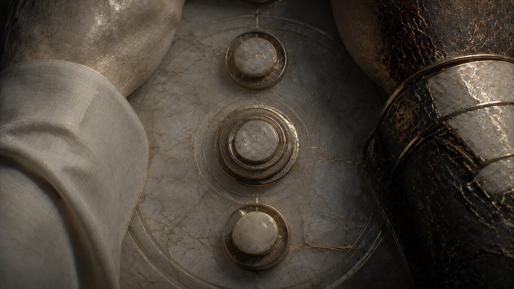
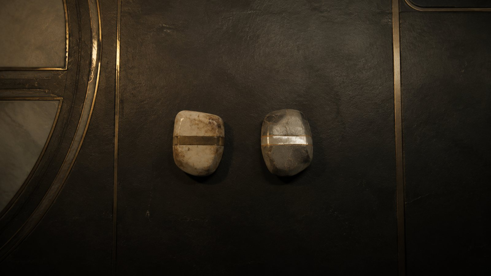
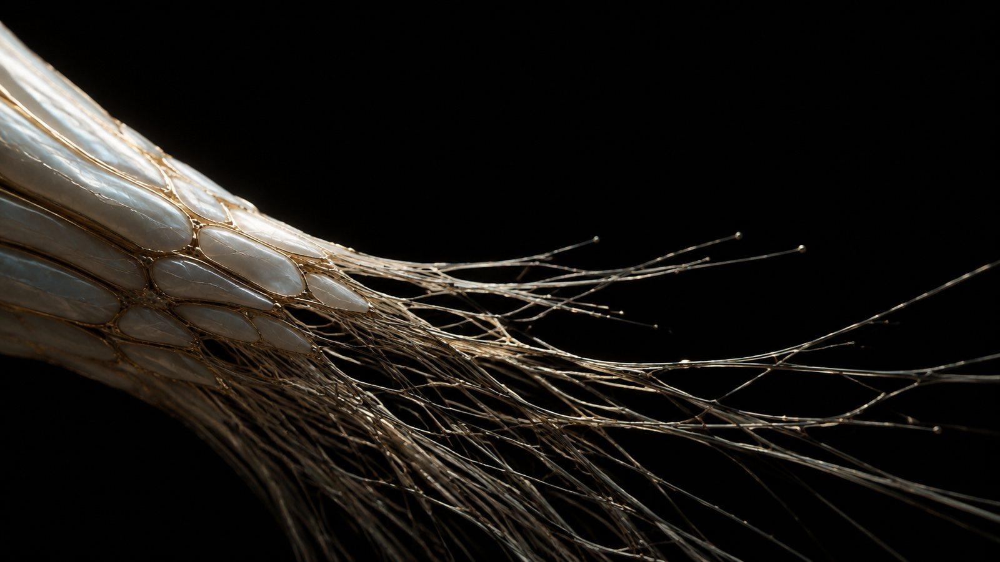
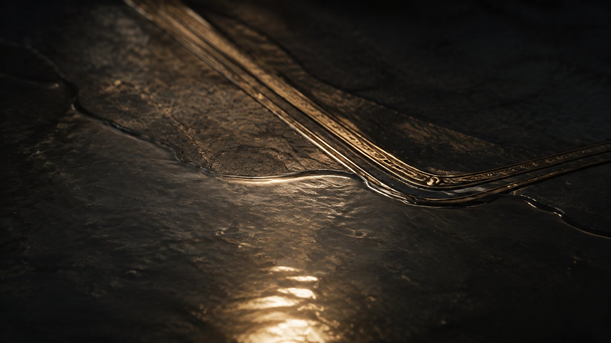
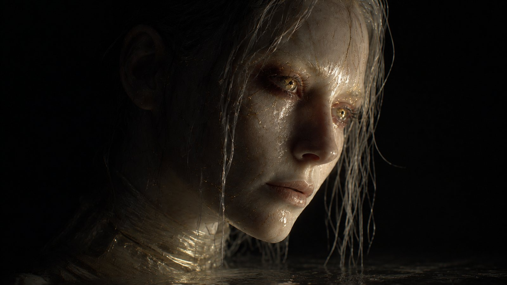
六. 라스
달의 생존자들은 아라를 지도자로 인정하지 않았다.
라스도 마찬가지였다.
그들은 아라가 자신들의 기억을 통제할 수 있다는 사실을 두려워했고, 라스가 자신들의 몸을 장치처럼 계산할 수 있다는 사실을 두려워했다.
두 사람은 서로의 방식을 비난하면서도 생존자들의 앞에 함께 서 있었다.
치우의 아이 하나가 라스에게 물었다.
“당신은 우리를 고칠 수 있어요?”
라스는 아이의 신경망을 스캔했다. 아이의 뇌에는 치우의 감응 구조와 르네의 신경 회로가 함께 있었다. 두 체계는 서로를 방해하고 있었고, 그 방해 때문에 아이는 주변의 감정을 너무 많이 느끼고 있었다.
“고칠 수 있어.”
라스가 말했다.
아라가 그를 바라보았다.
“무엇을 고칠 수 있는데?”
“과부하.”
“그건 아이의 능력일 수도 있어.”
“능력 때문에 매일 다른 사람의 공포를 듣고 있어.”
아이의 눈이 아라를 향했다.
“그럼 제가 이상한 건가요?”
아라는 아이 앞에 무릎을 꿇었다.
“아니.”
“라스는 고칠 수 있다고 했어요.”
“네가 고장 났다는 뜻은 아니야.”
“그럼 왜 고쳐요?”
아라는 라스를 바라보았다.
“네가 원하면 고치는 거야.”
라스가 말했다.
“원하지 않으면?”
“그대로 둬.”
아이의 눈에 눈물이 고였다.
“그럼 너무 시끄러워요.”
라스는 자신의 신경 차폐기를 벗었다. 손상된 장치였지만, 아직 일부 기능은 남아 있었다.
“이걸 쓰면 주변의 감정이 조금 멀어질 거야.”
아라가 그의 손목을 보았다.
“그 장치는 기억도 막아.”
“감정과 기억 사이에 차폐선을 조정할 수 있어.”
“네가 해?”
“아니. 아이가 선택해.”
라스는 장치를 아이에게 건넸다.
아이는 장치를 받았지만 바로 착용하지 않았다.
“나중에 써도 돼요?”
“그래.”
“안 써도 돼요?”
“그래.”
아라는 라스를 보았다.
그가 처음으로 누군가의 선택을 계산보다 앞에 둔 순간이었다.
그러나 그녀는 그것을 칭찬하지 않았다.
“네가 좋은 사람이 된 건 아니야.”
“알아.”
“말데크를 파괴한 사람이라는 사실도 바뀌지 않아.”
“알아.”
“내 기억을 지운 것도.”
“그것도 알아.”
“그럼 왜 그대로 있지?”
라스는 달의 작은 창 너머를 보았다. 멀리 소행성대가 흐르고 있었다.
“네가 떠나면, 내가 틀렸다는 걸 증명할 사람이 없으니까.”
아라는 그 대답이 마음에 들지 않았다.
그것은 너무 솔직해서, 공격할 틈이 없었다.
“나는 네 증거가 아니야.”
“나도 네 속죄가 아니야.”
“그럼 우리는 무엇이지?”
라스가 잠시 생각했다.
“서로의 오차.”
아라는 웃지 않았다.
그러나 광물 두 개를 다시 손에 쥐었다.
완전하지 않기 때문에 열릴 수 있었던 관문
장면 이미지 · 六. 라스
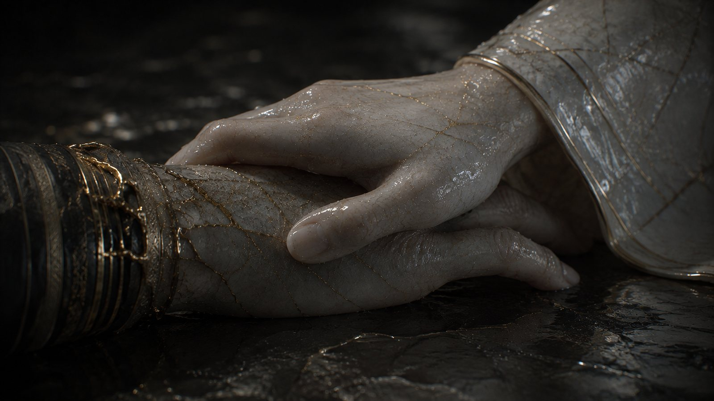
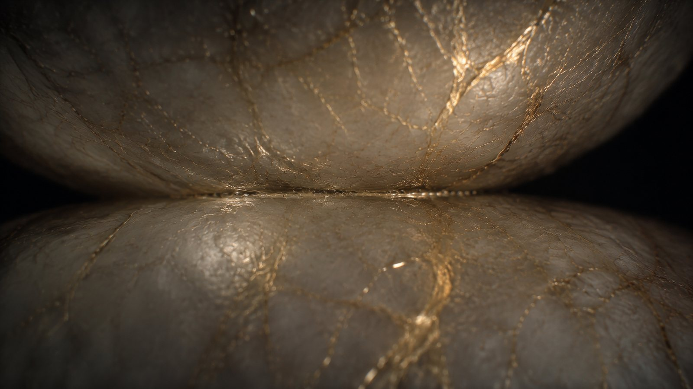
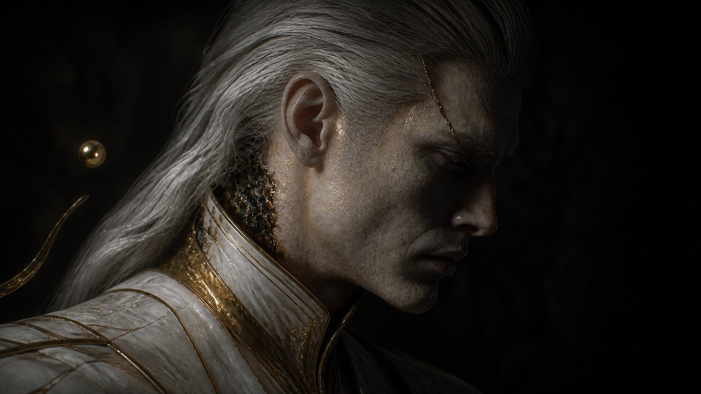
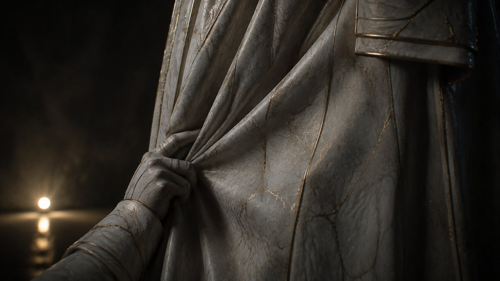
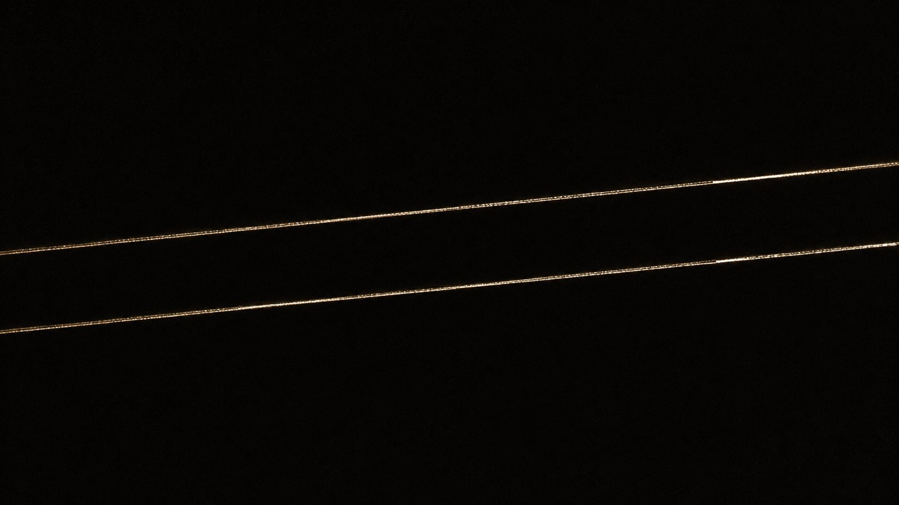
七. 아라
제6편의 마지막 날, 아라는 지구를 향한 감응 좌표를 확인했다.
지구는 아직 전쟁의 이름을 갖지 못한 행성이었다. 말데크의 생존자들에게 지구는 보호 구역이었고, 화성의 생존자들에게는 새로운 거점이었다. 그러나 이제 지구에는 다른 이름이 필요했다.
선택되지 않은 곳.
두 종족이 모두 떠난 뒤에도 혼자 남을 수 있는 곳.
아라는 지구의 고산지대에서 작은 감응 장소 하나를 느꼈다. 아직 돌은 놓이지 않았고, 사람도 없었다. 그러나 그 자리에는 미래의 손자국이 있었다.
누군가가 언젠가 그곳에 삼각대를 세울 것이다.
누군가가 측량값을 기록할 것이다.
누군가는 0.4도의 편차를 발견할 것이다.
아라는 그 미래를 바꾸지 않았다.
이번에는 미래를 통제하지 않기로 했다.
라스가 옆으로 다가왔다.
“지구로 가는 관문을 만들 수 있어.”
“완전한 관문은?”
“없어.”
“그럼?”
“불완전한 관문.”
“도착하지 못할 수도 있겠네.”
“그래.”
“죽을 수도 있고.”
“그래.”
“그런데도 가자고?”
“이번에는 누구도 결과를 보장하지 않기 때문이야.”
아라는 라스의 얼굴을 보았다. 그의 눈에는 여전히 말데크의 잔해가 남아 있었다. 그러나 그 잔해 사이에 다른 것이 생겨나고 있었다.
불확실성.
라스는 그것을 두려워했지만, 더 이상 완전히 제거하려 하지 않았다.
“지구에 도착하면 무엇을 할 거야?”
라스가 물었다.
“아무것도 만들지 않을 거야.”
“너희는 늘 그렇게 말하면서 돌을 놓더군.”
“돌은 건물이 아니야.”
“네가 보기에는 그렇겠지.”
“너는 무엇을 만들 건데?”
“혼자 열 수 없는 기술.”
“르네의 모든 장치를?”
“아니. 생존자들이 서로에게 의존해야만 작동하는 장치.”
“너희는 의존을 약점이라고 했잖아.”
“그래서 말데크를 잃었지.”
관문이 작동했다.
이번에는 세 겹이었다.
그러나 바깥 정렬층에는 르네의 규격석과 치우의 거친 돌이 함께 놓여 있었다. 중간 하중층에는 라스의 계산 회로와 아라의 광물 두 개가 연결되어 있었다. 안쪽 도착층은 여전히 비어 있었다.
아라는 그 빈 공간을 바라보았다.
“누가 먼저 가?”
“네가 정해.”
“그 말은 위험해.”
“알아.”
“내가 잘못 읽으면?”
“내가 잘못 계산하면?”
“둘 다 실패하면?”
라스가 아라를 바라보았다.
“그곳에 도착하지 못한 기록이 남겠지.”
아라는 광물 두 개를 관문 바닥에 놓았다.
“이번에는 기록만 남기지 말자.”
“무엇을 남기지?”
“서로가 틀렸다는 걸 확인할 수 있는 자리.”
라스가 관문에 들어섰다.
아라도 그 뒤를 따랐다.
빛이 두 사람을 감쌌다.
관문 안쪽의 빈 공간에 열이 쌓이기 시작했다. 내벽의 결정 구조가 변하기 직전, 아라는 라스의 손을 잡았다.
그의 손이 아주 작게 떨렸다.
“무서워?”
아라가 물었다.
“측정할 수 없어.”
“그럼 무서운 거야.”
“네가 어떻게 알아?”
“네 손이 말했어.”
라스는 손을 놓지 않았다.
“이번에는 내 기억을 읽지 마.”
“읽지 않을게.”
“내가 무슨 생각을 하는지 말하지도 마.”
“말하지 않을게.”
“그럼 무엇을 할 거지?”
아라는 관문 바깥의 어둠을 보았다.
“도착할 때까지 기다릴 거야.”
빛이 닫혔다.
달의 지하 공명실에서 관문은 사라졌다.
내벽에는 열흔이 남지 않았다.
대신 바닥에 작은 각도 하나가 새겨졌다.
0.4도.
지구의 고원, 아직 아무것도 세워지지 않은 자리
장면 이미지 · 七. 아라
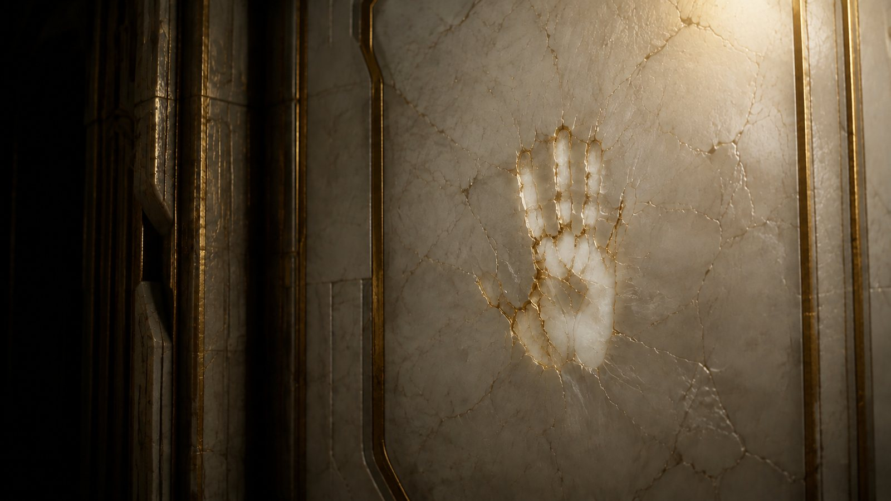
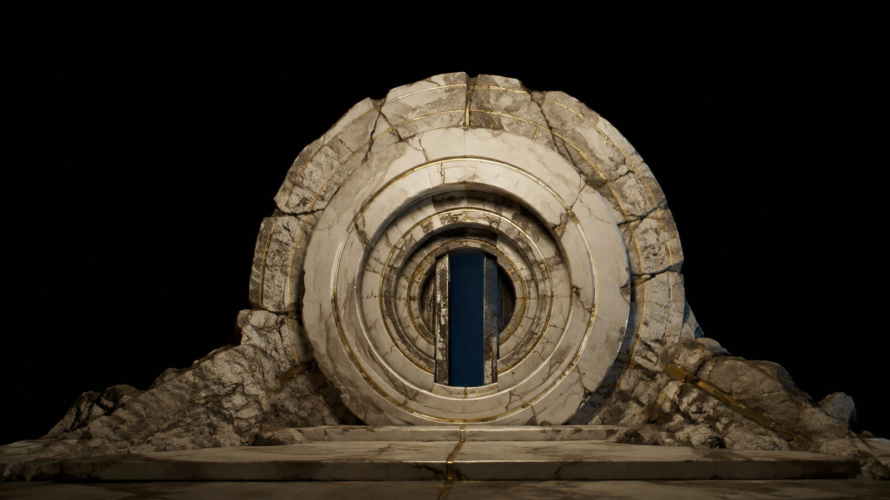
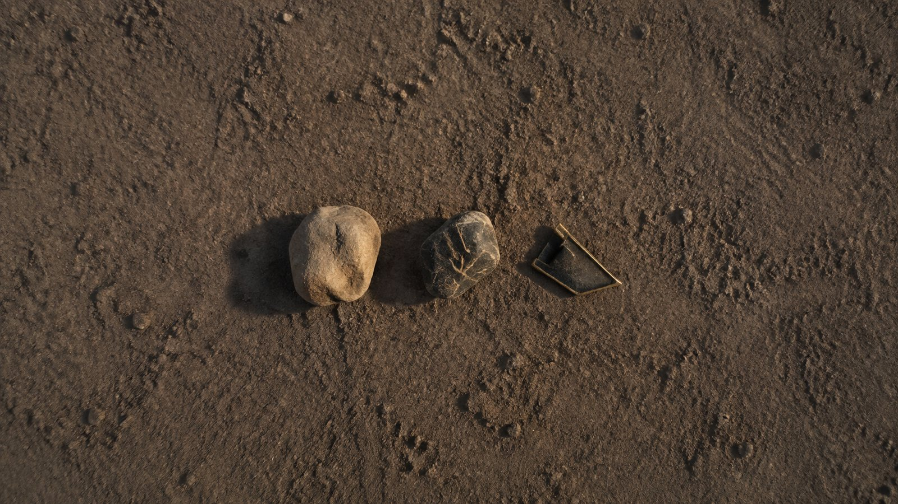
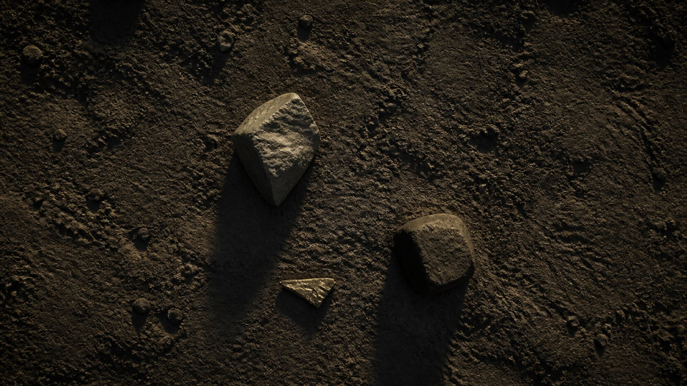
八. 라스
지구의 대기는 달랐다.
화성의 대기는 부족했고, 말데크의 대기는 너무 넓었다. 지구의 대기는 무겁게 몸을 감쌌다. 라스는 첫 호흡에서 기침했다.
아라는 몇 걸음 앞에서 서 있었다. 그녀는 이미 지구의 감정을 듣고 있었다.
수많은 생명.
서로 모르는 채 살아가는 의식.
아직 전쟁을 기억하지 않는 아이들.
라스는 주변을 둘러보았다. 고원 위에는 아무것도 없었다. 돌도, 관문도, 저장 장치도 없었다.
그는 즉시 높이와 경사와 토양 밀도를 계산하려 했다.
아라가 말했다.
“아무것도 하지 마.”
“정착지를 선택해야 해.”
“아직은.”
“생존자들은 시설이 필요해.”
“시설을 만들면 그들이 시설의 명령을 따르게 돼.”
“그럼 무엇을 하지?”
아라는 땅에 손을 대었다.
“기다려.”
라스는 하늘을 보았다.
달이 떠 있었다.
달의 표면에는 말데크 전쟁 때 생긴 크레이터들이 남아 있었다. 화성의 관통기와 치우 방어포의 흔적이었다. 훗날 누군가는 그것을 자연적인 충돌 자국이라고 부를 것이다.
라스는 손목의 신경 차폐기를 내려다보았다.
장치의 내부에는 기록 프로토콜의 작은 데이터 조각이 남아 있었다. 완전히 삭제하지 않은 것이다.
그는 그것을 꺼내려다 멈췄다.
“왜 남겨 뒀지?”
아라가 물었다.
“무엇을?”
“전쟁 기록의 조각.”
“네가 느꼈나?”
“이번에는 네 표정이 말했어.”
라스는 대답하지 않았다.
그는 르네 전쟁 시스템의 조각을 자신의 손 안에 넣었다.
“기록이 필요해.”
“전쟁 기록?”
“전쟁 기록도.”
“다시 전쟁을 시작할 수 있어.”
“그래.”
“그런데도 남겨?”
“기억을 없애면 같은 명령을 다른 이름으로 다시 만들게 돼.”
아라는 오래 침묵했다.
고원 아래에서 바람이 불었다. 아무것도 축조되지 않은 땅을 지나, 먼 곳의 마른 나뭇잎을 움직였다.
라스는 땅에 금속 조각을 놓았다.
아라는 그 옆에 광물 두 개를 놓았다.
라스는 즉시 각도를 계산했다.
금속 조각과 광물 사이의 방향은 정확히 0.4도 어긋나 있었다.
아라는 그 값을 보았다.
“이번에는 네가 일부러 남긴 건가?”
“아니.”
“그럼?”
“우리가 도착한 곳이 원래 좌표와 달라.”
“얼마나?”
“0.4도.”
아라는 땅에 손을 대었다.
지구의 고원 아래에서 아주 먼 목소리가 들려왔다.
말데크의 파편.
화성의 생존자.
달의 저장소.
그리고 아직 태어나지 않은 인간의 의식.
누군가가 그 모든 것을 아주 느리게 연결하고 있었다.
아라는 눈을 감았다.
이번에는 미래를 보지 않았다.
그녀는 현재의 소리를 들었다.
라스의 심장.
자신의 호흡.
고원 아래에서 자라는 작은 뿌리.
달 표면에 남은 오래된 금속의 팽창음.
지구의 바람.
서로 다른 리듬들이 완전히 같아지지 않은 채 함께 있었다.
그것이 문명의 첫 번째 조건일지도 몰랐다.
라스가 물었다.
“이곳에 이름을 붙일까?”
“이름은 나중에.”
“그럼 좌표만 남기지.”
“좌표도 나중에.”
“아무것도 남기지 않으면?”
아라는 땅에서 손을 떼었다.
“누군가가 오면 알게 될 거야.”
“무엇을?”
“여기에는 아무것도 세워지지 않았다는 것.”
라스는 그 말을 이해하지 못했다.
그러나 이해하지 못한 채로 남겨 두었다.
멀리서 돌 하나가 굴러와 두 광물 사이에 멈췄다.
세 물체가 이루는 각은 완벽하지 않았다.
0.4도였다.
라스는 기록 장치를 켰다.
이번에는 수치만 입력하지 않았다.
그는 처음으로 문장을 적었다.
말데크 파괴 후 생존자 일부가 지구에 도착했다. 도착 과정은 성공으로 분류할 수 없다. 좌표가 어긋났고, 기억이 섞였으며, 아무도 원래의 자신으로 돌아오지 못했다. 그러나 모두가 사라진 것도 아니다.
생존은 원형을 보존하는 일이 아니다. 어긋난 채 계속되는 일이다.
라스는 기록을 저장했다.
아라는 그 문장을 읽지 않았다.
읽을 수 있었지만, 읽지 않았다.
그녀는 고원 위에서 지구의 하늘을 바라보았다.
아직 별자리에는 전쟁의 이름이 없었다.
그러나 먼 어둠 속, 말데크의 파편들이 아주 느리게 서로를 향해 움직이고 있었다.
누군가는 그 움직임을 중력이라고 부를 것이다.
누군가는 기억의 귀환이라고 부를 것이다.
그 둘은 서로 다른 말이지만, 같은 방향을 가리키고 있었다.
아라와 라스는 말없이 서 있었다.
두 사람의 그림자는 서로 닿지 않았다.
그러나 그 사이의 빈 공간에는, 아직 도착하지 않은 무언가가 들어올 자리가 남아 있었다.
장면 이미지 · 八. 라스
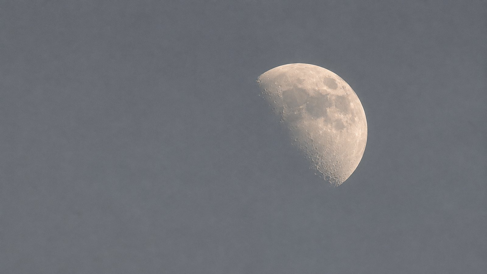
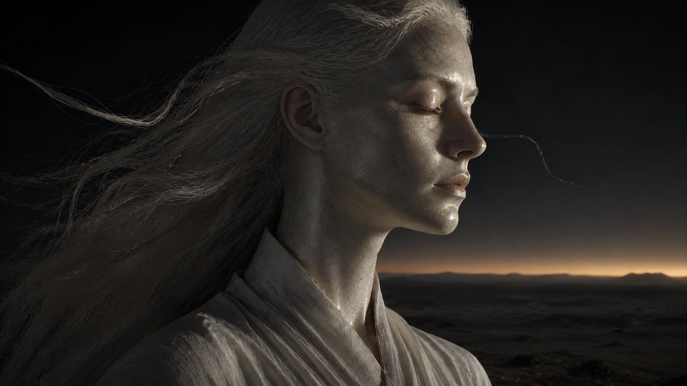
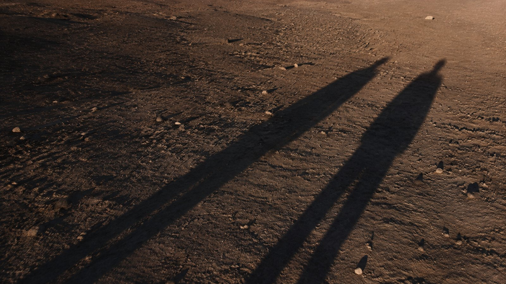
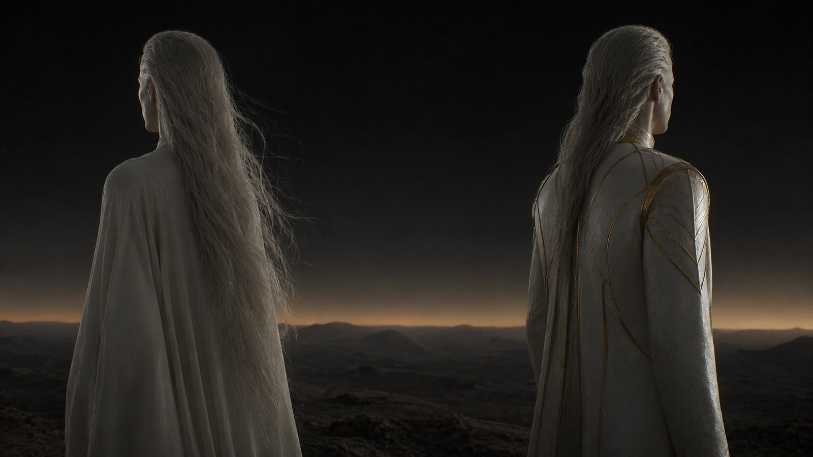
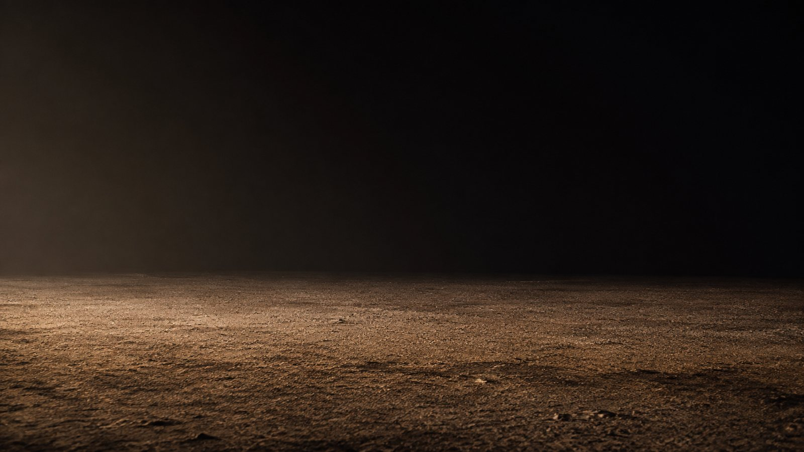
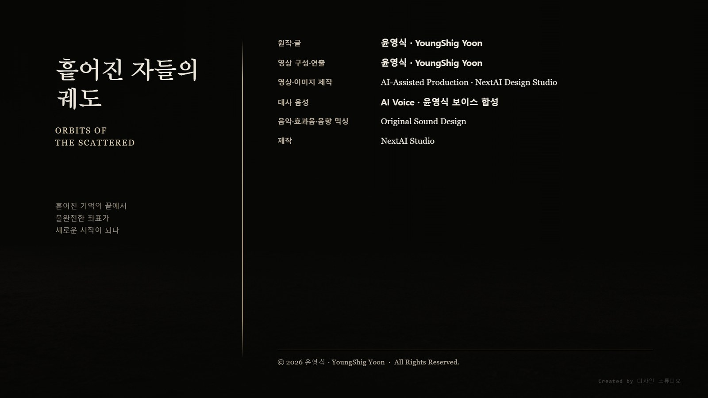